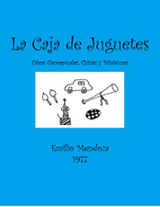

La Caja
de Juguetes
Emilio
Mendoza, 1977
Conjunto
de obras conceptuales, chistes y miniaturas

para varios ejecutantes y mucha imaginación
1977 / 20 min
Ejecuciones
- Preludio, Música Invisible II, V, VI.
Curso Latinoamericano de Música Contemporánea, São João
del Rei, Brasil, ejecutada por varios ejecutantes y el
autor, 01/1978.
- Preludio. 32º Hauptarbeitstagung del
Institut für Neue Musik und Musikerziehung, Darmstadt,
ejecutada por Ramón Ramos y el autor, 20/03/1978.
- La Caja de Juguetes. Conciertos de la
Sociedad Uruguaya de Música Contemporánea, Montevideo,
1979-80.
- La Ultima Cena. Restaurante griego de
Düsseldorf, ejecutado y disfrutado por el grupo extendido
de amigos, profesores y novias de los compositores del
Robert Schumann Institut, 07/1980. (Emilio Mendoza,
Alfredo Rugeles, Alfredo Marcano, Paco Estévez, Ramón
Ramos y novias respectivas Isa Teloeken, Monika).
- Preludio, La Carta, Diálogos, Música Invisible
II, III, IV, VI. Curso Latinoamericano de Música
Contemporánea, Santiago de los Caballeros, República
Dominicana, ejecutada por varios ejecutantes y el autor,
01/1981.
Esta composición fue realizada
en 1977 en Düsseldorf, Alemania, en un momento donde me sentía
abatido y solo, despechado porque mi novia Ariana Tarhán no se
pudo venir conmigo a este nuevo país, ya que quería terminar
sus estudios en Venezuela, y ya se le había enfriado su amor
por mí con el tiempo desde nuestra separación física en
septiembre, 1976. Me sentí no obstante libre y creativo,
haciendo varias piezas a la vez, como Susurro, Arsis, entre el 77 y el
78.
La Caja de Juguetes es
una colección de chistes conceptuales, música de pensamiento,
criticando la música contemporánea que escuchaba en los miles
de conciertos aburridos a que asistíamos, donde los
compositores hablaban maravillas analíticas sobre sus obras
pero, a la hora de oírlas, eran muy fastidiosas. No había
ritual, disfrute, sensualidad, todo lo que me apasionaba de la
música era inexistente en este campo. Como todo lo que se hace
para niños, debe divertir y ser gracioso, tiene que tener
humor, me fui al extremo y quise componer música del punto de
vista de un niño, es decir, con humor.
Experimenté con los filtros de ruidos que ejercemos al
escuchar música, con la traslación del pensamiento musical a
otros canales de expresión como el verbal, la danza, la
imagen. Se incluye mi primera pieza "ecológica", Chichiriviche,
que crítica la basura, la tomadera de cerveza, el descuido, la
desidia en las playas, entre otros conceptos y muy diversas
expresiones. Ricardo Teruel me comunicó mucho tiempo después
en la USB, cuando tutoreaba su tesis de maestría, que estas
piezas le influyeron en cierta medida a su desarrollo
artístico posterior.
Hice una variación en 2012 de Chichiriviche con la
pieza Choroní, sintiendo en desesperación la elevación
de la contaminación musical en nuestras playas.